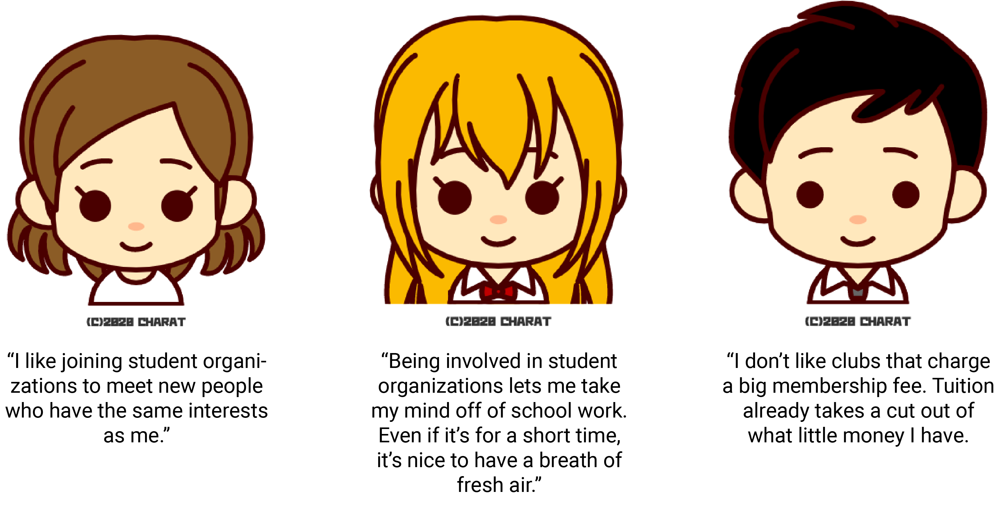
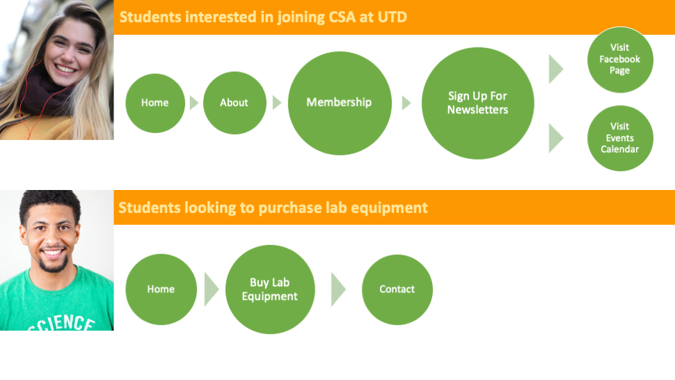

Improving the user experience for the Chemistry Student Association website to increase membership and promote lab equipment sales
It's the start of the school semester. Students are wandering around the Student Organization Fair, looking for a new student organization to join with their friends. Interested students head to designated booths to learn more about a particular organization.
The Chemistry Student Association (CSA) is a club at The University of Texas at Dallas. They use their website to showcase their club to new and interested members. However, their website has been outdated since 2016 and is a mess for students to navigate through.
Create a streamlined experience for UTD students interested in joining CSA in order to increase member acquisition rates for this club.
UI/UX Designer
Alexandria Lo
Melody Chuang
Nov 2019 - Apr 2020
User Interviewing, Wireframing, Card Sorting, Usability Testing, Prototyping
Adobe XD, Adobe Illustrator, Adobe Photoshop, Keynote, Optimal Workshop
To scope out what the pain points were for the website, I conducted stakeholder interviews with the 8 officers for the year of 2019 - 2020. Among the questions were...
I put together the three main concerns that the officers had:
Overall, the team wanted to create a pleasant experience for UTD students who are interested in the Chemistry Student Association at The University of Texas at Dallas to go onto the page to learn more about the benefits for the club as well as upcoming events.
To understand the pain points that users have when searching for a student organization and their resources, I conducted an interview to gain insight on potential members. I wanted to learn more about interviewees':
After interviewing 5 individuals, these were some of the main quotes I pulled:
Surveys to 15 participants were also gathered regarding if students knew the Chemistry Student Association sold lab equipment and the results showed:
Using the data gathered from the interviews and surveys, there are two types of users who would use the site:


I started with determining the possible user flow as each persona landed on the website. As I was doing this, I realized I could make the Membership page more fluid for Persona 1, the user looking to join CSA, by adding in recommendations after they requested to join the mailing list. Both of the user flows are as follows:
Per the interviews I had with the officers, it was clear that the team wanted a simpler design of the website. Therefore, some items would be taken out. Because this was a redesign for the website, there were several areas that didn't need a complete overhaul, such as the About section or Membership section. This is the current information architecture:

Based on the interviews, this could be simplified, taking away the excess items underneath Events and bucketing photos. In addition, the page to purchase lab materials would be added in:

After conducting the initial research and establishing the wireframe, the next goal was to create wireframes and gather feedback from the design. I discussed ideas for interfaces and potential journeys and discussed it with the organization's webmaster.

The one page that wasn't already previously established was the "Buy Lab Equipment" page. In addition, the Events page was shrunk down to contain just the calendar, and the About Us page merged with the Meet Our Officers page.